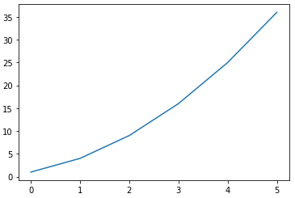
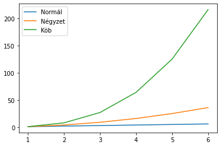
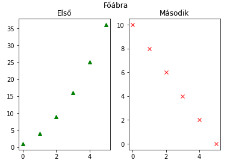
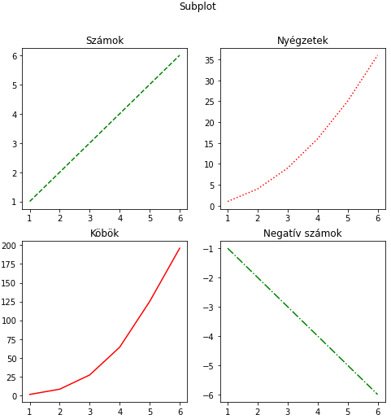
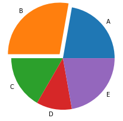

Adatvizualizáció
A nagy adatsorok elemzése során nehéz megtalálni a lényeges információkat. Az adatok megfelelő formában történő megjelenítésével azonban pillanatok alatt láthatóvá válnak a kiugró értékek, trendek vagy egyéb releváns mutatók.
A matplotlib egyike a számos adatvizualizációra alkalmas Python modulnak. Kiválóan alkalmas statikus, animált vagy éppen interaktív ábrák és grafikonok megjelenítésére. A kevés előfeltétele (más modulok) miatt előszeretettel alkalmazzák egyszerűbb projektekben. Bár rendkívül széles az eszközkészlete, komolyabb adatelemzéshez inkább komplexebb modulokat érdemes alkalmazni. De látni fogjuk, hogy a legtöbb feladatra a matplotlib is bőven elegendő.
Telepíteni a szokásos pip utasítással lehet:
pip install matplotlib
Ebben az anyagban csak a modul leggyakrabban használt funkcióit mutatjuk be a teljesség igénye nélkül. A bővebb, hivatalos leírás elérhető az alábbi linken: Python Matplotlib Guide.
Vonaldiagram
A matplotlib.pyplot osztály plot metódusával vonaldiagramon ábrázolhatók a megadott értékek.
import matplotlib.pyplot as plt
y = [1, 4, 9, 16, 25, 36]
plt.plot(y)

Alapértelmezetten a nullától induló x tengelyen jelennek meg az értékek, de egy, az értékekkel megegyező méretű listával megadhatók az x tengely megfelelő értékei is.
import matplotlib.pyplot as plt
x = [1, 2, 3, 4, 5, 6]
y = [1, 4, 9, 16, 25, 36]
plt.plot(x, y)
Az x tengely értékeinek nem kell folytonosnak lennie, és a növekvő sorrend sem elvárás, de a pontok összekötése az x tengely értékei alapján kerülnek meghatározásra.
Számos lehetőség van az ábra formázására.
import matplotlib.pyplot as plt
x = [1, 2, 3, 4, 5, 6]
y = [1, 4, 9, 16, 25, 36]
#Az ábra mérete inch-ben
plt.figure(figsize=(15, 5))
plt.plot(x, y)
# Ábra címe
plt.title('Vonaldiagram')
# X tengely felirata
plt.xlabel('X tengely')
# Y tengely felirata
plt.ylabel('Y tengely')
# Megjeleníti a definiált ábrákat
plt.show()
 A példában az utolsó
A példában az utolsó show függvény hívás nélkül is megjelenik az ábra. A fő funkciója az, hogy lezárja a formázást, mielőtt a következő ábra megjelenítésére térnénk rá. (A show ennél többet is csinál, de nekünk most ennyit elég róla tudni.) Az átméretezés magára a megjelenítési felületre vonatkozik, ezért ezt még a plot hívás előtt kell beállítani, különben nem jut érvényre.
A plot függvény harmadik paraméterének a neve fmt azaz "format". A segítségével egy rövid karakterkóddal megadhatjuk a vonaldiagram megjelenését. Például elhagyhatjuk az összekötő vonalakat és a pontokat piros körökre cserélhetjük az "ro" argumentummal.
import matplotlib.pyplot as plt
x = [1, 2, 3, 4, 5, 6]
y = [1, 4, 9, 16, 25, 36]
plt.plot(x, y, "ro")
plt.show()

Az fmt paraméter leírása ezen az oldalon a Notes szekció alatt érhető el.
Több adatsor
Több adatsor megjelenítéséhez egyszerűen újra meg kell hívni a plot függvényt az ábra lezárása (show) nélkül.
import matplotlib.pyplot as plt
import numpy as np
x = np.arange(1, 7)
plt.plot(x, x, label="Normál")
plt.plot(x, x**2, label="Négyzet")
plt.plot(x, x**3, label="Köb")
plt.legend()
plt.show()

A példában a NumPy modul segítségével hoztunk létre egy kiinduló vektort, és ebből a hatványozás segítségével állítottuk elő az adatsorokat. (Ez hagyományos Python lista esetén nem működne.)
Egy további újdonság, hogy label nevű paraméterrel elneveztük az egyes adatsorokat, a jelmagyarázatot, pedig a legend segítségével jelenítettük meg. A legend lehetséges beállításairól az online útmutatóból lehet tájékozódni.
Subplot
Gyakran előfordul, hogy hely szűkében vagyunk vagy könnyen összehasonlítható grafikonokra van szükségünk. Ilyenkor egy ábrára több grafikont is szeretnénk elhelyezni. Az alábrák (subplot) lehetőséget adnak erre.
import matplotlib.pyplot as plt
plt.subplot(1, 2, 1)
plt.plot([1, 4, 9, 16, 25, 36], "g^")
plt.title("Első")
plt.subplot(1, 2, 2)
plt.plot([10, 8, 6, 4, 2, 0], "rx")
plt.title("Második")
plt.suptitle("Főábra")
plt.show()

A subplot függvény létrehoz egy felületet, amire a következő plot-ot elhelyezhetjük. A subplot első két paramétere egy mátrixot határoz meg (sor és oszlopszám), amiben el lehet helyezni az aktuális ábrát. A harmadik paraméter azt mondja meg, hogy a mátrixon belül melyik indexű helyre kerüljön az ábránk. A számozás 1-től indul és balról jobbra, soronként haladva növekszik. A példában a plt.subplot(1, 2, 2) egy egysoros és két oszlopos elrendezés jobb oldali részét jelöli ki.
A funkció használata során általában oda kell figyelni, hogy mindig egyforma méretű mátrixot adjunk meg (egészen addig, míg egy show utasítással le nem zártuk az adott ábrát). Lehetőség van azonban arra is, hogy egynél több indexet összevonjunk egy nagyobb subplot-ba. Ebben az esetben eltérő méretű, de az eredetinek megfelelő elrendezésű mátrix segítségével nagyobb alábrákat is létrehozhatunk.
import matplotlib.pyplot as plt
plt.subplot(2, 2, 1)
plt.plot([1, 4, 9, 16, 25, 36], "g^")
plt.title("Első")
plt.subplot(1, 2, 2)
plt.plot([10, 8, 6, 4, 2, 0], "rx")
plt.title("Második")
plt.suptitle("Főábra")
plt.show()

Ebben a példában az előzőhöz képest csak az első subplot első paraméterét módosítottuk 1-ről 2-re. Így egy 2x2-es mátrix első helyére próbáltuk meg elhelyezni az első ábrát. A második ábra egy 1x2-es mátrix második helyére kerülne, ami megfelel az eredeti 2x2-es mátrix 2. és 4. helyének. Utóbbiak még üresek az eredeti mátrixban, ezért elhelyezhető oda a nagyobb ábra. A példában az is jól látszik, hogy akár üresen is hagyhatunk helyeket az ábrán.
Számos olyan elrendezést lehet találni, amit a fenti megoldással nem lehet előállítani. Ezekhez már a matplotlib gridspec osztályát kell használni. Ilyen komplex ábrákat a gyakorlatok során nem kell majd előállítani.
Amennyiben sok alábrával vagy ábrával dolgozunk, zavaró lehet, hogy a kódban egy helyen kell szerepelnie az egyes plot-okhoz. Gyakran jobb, ha például az egyes ábra feliratokat egy helyen tudjuk kezelni. Ehhez szükség van arra, hogy a kódban később is hivatkozni tudjunk az egyes ábráinkra.
import matplotlib.pyplot as plt
x = [1, 2, 3, 4, 5, 6]
y = [[1, 2, 3, 4, 5, 6],
[1, 4, 9, 16, 25, 36],
[1, 8, 27, 64, 125, 196],
[-1, -2, -3, -4, -5, -6]]
fig = plt.figure(figsize=(8, 8))
ax_1 = fig.add_subplot(2, 2, 1)
ax_1.plot(x, y[0], "g--")
ax_2 = fig.add_subplot(2, 2, 2)
ax_2.plot(x, y[1], "r:")
ax_3 = fig.add_subplot(2, 2, 3)
ax_3.plot(x, y[2], "r-")
ax_4 = fig.add_subplot(2, 2, 4)
ax_4.plot(x, y[3], "g-.")
ax_1.set_title("Számok")
ax_2.set_title("Nyégzetek")
ax_3.set_title("Köbök")
ax_4.set_title("Negatív számok")
fig.suptitle("Subplot")
plt.show()

Az ábra méretét meghatározó függvény visszatérési értéke egy Figure objektum. A pyplot segítségével közvetlenül hívott utasítások (pl.: plt.suptitle) a háttérben gyakran az éppen aktuális Figure objektum megfelelő metódusait hívják meg. Amennyiben ezt lementjük egy változóba, később közvetlenül is elérhetjük.
Érdekesség: Ha egy visszatérési értékkel rendelkező függvény eredményét nem mentjük változóba vagy használjuk fel, akkor azt a Python automatikusan kiírja az
Output-ra, kivéve akkor, ha egyébkéntFigure-t nem tesszük változóba, futtatáskor megjelenik egy az osztálypéldányt jelölő sor a kimeneten. Ha szebb megjelenítés érdekében ezt el akarjuk kerülni, akkor érdemes az ilyen függvények eredményét akkor is változóba tenni, ha nem tervezzük később használni.
A plt hívás helyett, közvetlenül a Figure-höz is adhatunk subplot-ot, de ilyenkor az add_suplot függvényt kell használni (a háttérben ez ugyanazt a kódot hívja, mint a plt.subplot). Mindegyik megoldás esetén a visszatérési érték egy Axes objektum (pontosabban az Axes-ből származó AxesSubPlot).
Az Axes objektumokat változóba mentve közvetlenül rajzolhatunk rájuk (plot) és a megfelelő függvényhívásokkal bármikor beállíthatók a paramétereik. A legtöbb függvényük a plt-n keresztül történő hívással megegyezik, csak egy set_ előtaggal kell kiegészíteni a függvény nevét.
A fenti példában az objektumok létrehozása jelentősen egyszerűsíthető a plt.subplots utasítás segítségével.
import matplotlib.pyplot as plt
x = [1, 2, 3, 4, 5, 6]
y = [[1, 2, 3, 4, 5, 6],
[1, 4, 9, 16, 25, 36],
[1, 8, 27, 64, 125, 196],
[-1, -2, -3, -4, -5, -6]]
fmt = ["g--", "r:", "r-", "g-."]
fig, ax = plt.subplots(2, 2, figsize=(8, 8))
c = 0
for i in range(2):
for j in range(2):
ax[i, j].plot(x, y[c], fmt[c])
c += 1
ax[0, 0].set_title("Számok")
ax[0, 1].set_title("Nyégzetek")
ax[1, 0].set_title("Köbök")
ax[1, 1].set_title("Negatív számok")
fig.suptitle("Subplot")
plt.show()
A plt.subplots egyszerre több alábra helyét alakítja ki, és tuple visszatérési értékkel visszaadja a megfelelő Figure objektumot és egy a létrehozott Axes objektumokból álló tömböt. Innentől ciklus segítségével is kezelhető az egyes alábrák megjelenítése. (A fenti kódrészlet az előzővel teljesen megegyező ábrát eredményez.)
Diagramtípusok
A matplotlib nem csak vonaldiagramok megjelenítésére alkalmas. A teljesség igénye nélkül nézzünk meg néhány másik típust.
Kördiagram
A kördiagram az eloszlások megjelenítésének legegyszerűbb formája.
import matplotlib.pyplot as plt
cegek = ['A', 'B', 'C', 'D', 'E']
reszesedes = [20, 25, 15, 10, 20]
explode = [0, 0.1, 0, 0, 0]
pie = plt.pie(reszesedes, explode=explode, labels=cegek)

A létrehozáshoz szükséges a címkék és a kapcsolódó értékek listája. Az alapvető beállítások megtalálhatók online. Egy különleges lehetőség az explode nevesített paraméter, melynek segítségével a megfelelő elem (akár az összes) kiemelhető a körből, ezzel hangsúlyozva az értéket.
Oszlopdiagram
Az oszlopdiagram egy alapvető ábrázolási forma, de több adatsor kombinálásával viszonylag összetett ábrák előállítására is alkalmas.
import matplotlib.pyplot as plt
import numpy as np
x = ['A', 'B', 'C', 'D', 'E']
y = list(np.random.randint(51, 100, size=5))
plt.bar(x, y, color="green")
plt.title("Oszlopdiagram")
plt.xlabel("Osztályok")
plt.ylabel("Átlag pontszámok")
plt.show()
 A példában a NumPy csomag véletlen generátorát felhasználva, az 51-99 intervallumon generált véletlen értékeket jelenítettünk meg.
A példában a NumPy csomag véletlen generátorát felhasználva, az 51-99 intervallumon generált véletlen értékeket jelenítettünk meg.
Hisztogram
A hisztogram az értelmezési tartományt egyforma méretű intervallumokra bontja, majd megszámolja az egyes intervallumokba eső értékeket, és az így kapott darabszámokat jeleníti meg egy "sűrű" oszlopdiagramon.
import matplotlib.pyplot as plt
import numpy as np
# A Python lehetőséget ad arra, hogy alul vonással elválasztva olvashatóbbá tegyük a beégetett számértékeket.
# Az alábbi sorban az argumentum a 100000-es érték.
x = np.random.randn(100_000)
plt.title("Histogram")
plt.xlabel("Érték")
plt.ylabel("Gyakoriság")
plt.hist(x, 100)
plt.show()
 A példában a NumPy
A példában a NumPy randn függvényét felhasználva normális eloszlás mentén generáltunk 100.000 véletlen értéket. (A megszokott véletlen szám generátor egyenletes eloszlás mentén ad értékeket.) Jól látható, hogy a hisztogram kirajzolja a normális eloszlás görbéjét.
A hist függvény második paramétere (bins) adja meg, hogy hány intervallumra osztja fel a függvény az értelmezési tartományt. A paraméter elhagyható, alapértelmezett értéke 10.
Feladatok
- Jelenítsd meg egy vonaldiagramon a sinus függvény értékét az 1-20 tartományon!
- Készíts egy 2x2 vonaldiagramból álló ábrát. Mindegyik x-tengelyen a számok 1-6-ig terjedjenek. Az értékek pedig rendre $x^2$, $x^3$, $x+2$ és $x+3$ legyenek. Minden alábrán más színű és megjelenésű vonal szerepeljen.
- Hozz létre egy öt elemű vektort 1-100 közé eső véletlen értékekkel. Jelenítsd meg az értékeket egy kördiagramon, és emeld ki a legnagyobb értékkel rendelkező szeletet. (A legnagyobb érték indexét legkönnyebben a
numpy.argmaxfüggvénnyel találhatod meg.) A címkék legyenek az értékek sorszámai. - Jeleníts meg az előző feladatban szereplő kördiagramból kettőt (eltérő véletlen értékekkel) egymás mellett, alattuk pedig egy kétszer olyan széles alábrán egy oszlopdiagramot, amiben a két kör értékeinek összegei látszódjanak.
- Jelenítsd meg egymás alatt a $sin(x)$ és $cos(x)$ függvényeket, valamint ezek 4-szeres frekvenciájú változatukat a $[0, \pi]$ intervallumon 0.1-es lépésközzel. Így összesen 4 alábrád lesz ugyanazon az értelmezési tartományon. Ezért legyen a teljes ábrának egy közös X tengely felirata, és minden alábra Y tengelyén pedig a függvény neve jelenjen meg.
- Hozz létre egy függvényt, aminek a bemenete egy szám, és egy 5 elemű vektort ad eredményül, aminek az értékei 0 és a paraméter közti véletlen egész számok. A felhasználótól kérj be két egész számot (kezeld a hibákat), mindkét értékkel hívd meg a függvényt, és az eredményeket jelenítsd meg egy ábrán csoportosított oszlopdiagramként (5x2 oszlopnak kell látszódnia). Az oszlopok alapértelmezésben egybe esnek, ezért be kell állítani a diagram
widthtulajdonságát 0.5-nél kisebbre (pl.: 0.4), és az X tengely vektorát el kell tolni awidthfelével (az első diagramnál negatív, a másodiknál pozitív irányba). - A korábbi hisztogram példát bővítsd ki úgy, hogy jelenjen meg rajta egy piros színű, a normális eloszlást reprezentáló vonal. Ehhez normalizáld a hisztogramot (
density=True), hozz létre egy vektort -4 és 4 között 0.1-es lépésközzel (ez lesz az értelmezési tartomány), majd számold ki a normális eloszlás értékét erre a tartományra ($m=0$, $\sigma=1$). Az így kapott eloszlásnak nagyjából illeszkednie kell a hisztogramhoz.